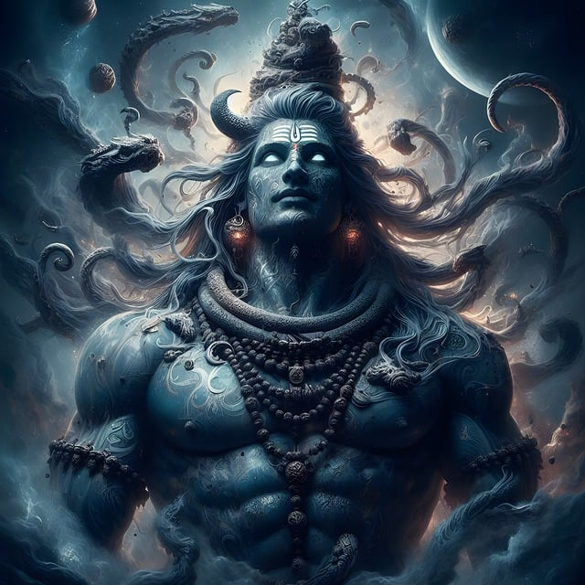

Dates for MAHAKUMB
- Makar Sankranti (First Shahi Snan): January 14, 2025
- Mauni Amavasya (Second Shahi Snan): January 29, 2025
- Basant Panchami (Third Shahi Snan): February 3, 2025
- Paush Purnima: January 13, 2025
- Achla Saptami: February 4, 2025
- Maghi Purnima: February 12, 2025
- Maha Shivratri (Final Snan): February 26, 2025
These dates hold immense significance, as millions of pilgrims will gather at the Sangam for these holy baths, which are believed to wash away sins and bring spiritual purification.
